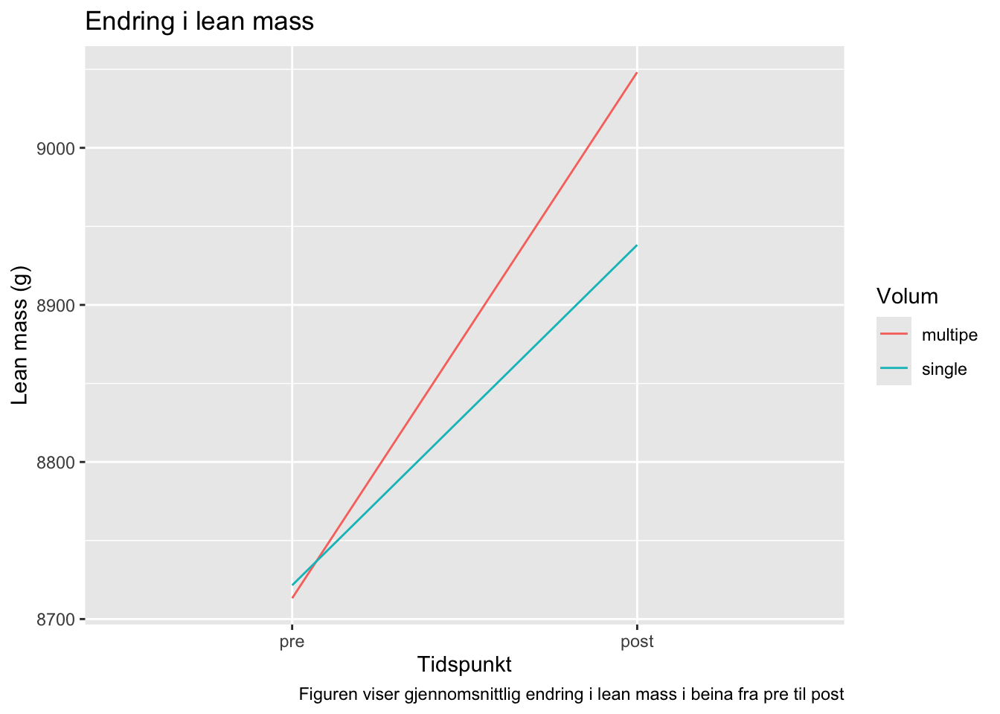
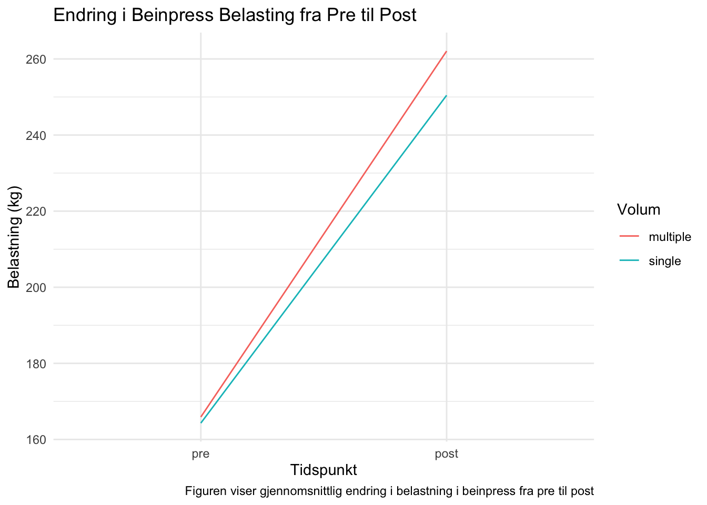

| Kvinner | Menn | |||
|---|---|---|---|---|
| Inkludert | Ekskludert | Inkludert | Ekskludert | |
| Antall | 18 | 4 | 16 | 3 |
| Alder | 22 (1.3) | 22.9 (1.6) | 23.6 (4.1) | 24.3 (1.5) |
| Vekt (kg) | 64.4 (10) | 64.6 (9.7) | 75.8 (11) | 88.2 (22) |
| Høyde (cm) | 168 (6.9) | 166 (7.6) | 183 (5.9) | 189 (4.6) |
| Verdiene er presentert som gjennomsnitt og standardavvik | ||||
5 5.1 Introduksjon
Styrketrening har som hovedmål å oppnå eller opprettholde muskelstyrke og muskelmasse, og dette kan variere avhengig av individuelle behov, treningsbakgrunn og mål. For de fleste er imidlertid det overordnede målet å forbedre fysisk helse ved å styrke musklene og øke muskelmassen. Hos personer som er utrente, viser forskning at styrketrening kan føre til en økning på mellom 0,1-0,5 % i muskelfibertverrsnitt og en økning på omtrent 1 % i muskelstyrke per treningsøkt de første 8-12 ukene med trening (Wernbom, Augustsson, and Thome?? 2007). Disse tidlige gevinstene skyldes primært neuromuskulær tilpasning, der kroppen lærer å rekruttere flere muskelfibre og forbedre koordinasjonen mellom nervesystemet og musklene.
Selv om styrketrening har betydelige helsefremmende fordeler, er det mange som nedprioriterer denne treningsformen på grunn av tidsmangel i en hektisk hverdag. Dette er et økende problem, spesielt når en stor del av befolkningen har stillesittende jobber og en inaktiv livsstil. Den manglende fysiske aktiviteten er en alvorlig trussel mot folkehelsen og øker risikoen for flere kroniske sykdommer som hjerte- og karsykdommer, diabetes og fedme. Videre kan lav fysisk aktivitet føre til redusert muskelmasse og styrke, noe som har negative konsekvenser for funksjonell helse, spesielt blant eldre voksne.
Forskning viser at muskelmasse og muskelstyrke reduseres betydelig etter fylte 50 år, en prosess kjent som sarkopeni, som kan føre til redusert mobilitet, dårligere balanse og økt risiko for skader (Deschenes 2004; Janssen et al. 2000). Tap av muskelmasse med økende alder er en naturlig prosess, men styrketrening kan motvirke denne utviklingen og bidra til at eldre voksne opprettholder eller til og med øker muskelmassen. Studier som Roth et al. (2001)(Roth et al. 2001) har vist at styrketrening har en positiv innvirkning på både muskelmasse og styrke, selv blant eldre voksne. Dette understreker viktigheten av å prioritere styrketrening som en del av helsefremmende tiltak, spesielt i lys av den aldrende befolkningen.
Med økende levealder i befolkningen blir det stadig viktigere å legge til rette for at enkeltindivider har de beste forutsetningene for god helse gjennom hele livet. Styrketrening kan spille en avgjørende rolle i dette, ved å forbedre muskelstyrken, redusere risikoen for fall og beinbrudd, og bidra til økt funksjonell kapasitet i dagliglivet. Det er derfor essensielt å finne treningsformer som er effektive og realistiske for folk i ulike aldre og livssituasjoner.
For å gjøre fysisk aktivitet mer tilgjengelig for folk med travle hverdager, er det viktig å utvikle effektive treningsmetoder som gir gode resultater uten at det tar for mye tid. Et spørsmål som har blitt mye undersøkt, er om det er noen forskjell på effekten av å trene med ett sett versus tre sett. Flere studier har sammenlignet disse treningsvolumene for å vurdere hvilken tilnærming som gir best muskelstyrkeutvikling.
En metaanalyse av Rhea et al. (2002) (Rhea et al. 2002)konkluderte med at personer som trente med tre sett per øvelse opplevde en signifikant større økning i muskelstyrke sammenlignet med de som trente med bare ett sett. Dette støttes også av forskning fra Rønnestad et al. (2007)(Rønnestad et al. 2007), som fant at det å trene tre sett hadde større effekt på muskelstyrken enn å trene ett sett.
Basert på den eksisterende kunnskapen om effekten av styrketrening, spesielt med tanke på treningsvolum, har denne studien som mål å undersøke om det er en forskjell i muskelstyrke og muskelmasse hos individer i alderen 18-40 år som trener enten ett sett eller tre sett på beina. Resultatene kan gi verdifull innsikt i hvorvidt forskjellige treningsvolumer påvirker styrke- og muskelmasseøkning.
6 5.2 Metode
Det ble rekruttert 41 mannlige- og kvinnelige deltagere til studien. For å kunne delta i studien måtte man være mellom 18-40 år og ikke røyker. Eksklusjonskriteriene var at du ikke kunne ha trent mer enn en ukentlig styrketreningsøkt det siste året. Ikke ha nedsatt muskelstyrke relatert til en tidligere eller enn nåværende skade. Gå på medisiner som kan påvirke adaptasjoner til trening, eller være allergisk mot lokalbedøvelse.
Etter intervensjonstart ble sju (n=7) ekskludert fra videre datanalyser grunnet at de ikke hadde gjennomført mer enn 85% av treningsøktene i intervensjonen.
7 5.2.1 Styrketrening
Intervensjonen var et 12-ukers styrketrening intervensjonv av hele kroppen. Underekstremitetene ble trent unilateralt for å kunne tillate differensiering av treningsvolum innad for deltageren. Beina ble tilfeldig og randomisert om det skulle utføres ett vs. tre sett motstandstrening. Hver forsøksperson utførte begge protokollene altså ett vs. tre sett. Muskelstyrke ble videre testet ved intervensjonsstart (baseline), etter uke 3, 5, 9 og ved intervensjonsslutt. Kroppssammensetningen til forsøkspersonene ble målt ved baseline (pre) og ved intervensjonslutt (post).
8 5.2.3 Testprotokoll
Maksimalstyrke ble testet som en én reptisjon-maksimaltest (1RM) i unilateralbenpress. Det ble gjennomført en standardisert- og øvelse spesifikk oppvarming der det ble kjørt 10 repetisjoner på 50%, 6 repetisjoner på 75% og 2 repetisjoner på forventet 1RM. Videre ble 1 RM testet ved at vekten økte gradvis til det ikke kunne utføres en benpress etter protokollført standard 4-6 forsøk per forsøksperson. Høyeste vekt som forsøkspersonen klarte ble notert og satt som 1RM
Kroppssammensetningen ble målt ved bruk av Dual-Energy røntgenabsorptimetri (DXA) (Lunar Prodgigy, GE healthcare) etter standardprotokoll. På forhånd før DXA ble forsøkspersonen informert om å faste i 2timer før test, samt å ikke gjennomføre hard fysisk aktivitet 48 timer før test.
9 5.3 Resultater
Det er blitt kjørt en parret t-test for å kunne se på differansen mellom det å gjøre et versus tre sett på beina på maksimal styrke ved unlatiral beinpress. Det gjøres også en grafisk fremstilling som skal illustrere forskjellen mellom ett og tre sett. Analyse programmet som er brukt er R studio for å analysere all data.
lean.fig <- dxadata %>%
select(participant:include, lean.left_leg, lean.right_leg) %>%
pivot_longer(names_to = "leg",
values_to = "lean.mass",
cols = lean.left_leg:lean.right_leg) %>%
mutate(leg = if_else(leg == "lean.left_leg", "L", "R"),
sets = if_else(multiple == leg, "multipe", "single")) %>%
select(participant, time, sex, include, sets, leg, lean.mass) %>%
filter(time %in% c("pre", "post")) %>%
group_by(time, sets) %>%
summarise(m = mean(lean.mass)) %>%
mutate(time = factor(time, levels = c("pre", "post"))) %>%
ggplot(aes(time, m, color = sets,
group = sets)) + geom_line() +
labs(x= "Tidspunkt",
y = "Lean mass (g)",
colour = "Volum",
title = "Endring i lean mass",
caption = "Figuren viser gjennomsnittlig endring i lean mass i beina fra pre til post")`summarise()` has grouped output by 'time'. You can override using the
`.groups` argument.lean.fig
library(tidyverse)
library(exscidata)
#| label: t-test strength
#| echo: false
#| include: false
strength <- strengthvolume %>%
filter(include == "incl") %>%
mutate(time = factor(time, levels =c("pre","post"))) %>%
mutate(time = if_else(time %in% c("pre", "session1"),
"pre", time)) %>%
filter(time %in% c("pre", "post"),
exercise == "legpress") %>%
summarise(load = mean(load, na.rm = TRUE),
.by = c(participant,
sex,
time,
sets,
exercise,
leg))
strength.ttest <- strength %>%
pivot_wider(names_from = time, values_from = load) %>%
mutate(change = post - pre) %>%
select(participant, sex, sets, change) %>%
pivot_wider(names_from = sets,
values_from = change) %>%
mutate(diff = multiple - single)
tt.strength <- with(strength.ttest, t.test(multiple, single, paired = TRUE))
p.strength <- round(tt.strength$p.value, 3)legpress.fig <- strengthvolume %>%
select(participant, time, sex, include, sets, exercise, load) %>%
filter(exercise == "legpress") %>%
filter(time %in% c("pre", "post")) %>%
group_by(time, sets) %>%
summarise(m = mean(load, na.rm = TRUE)) %>%
mutate(time = factor(time, levels = c("pre", "post"))) %>%
ggplot(aes(time, m, color = sets, group = sets)) +
geom_line() +
labs(x = "Tidspunkt",
y = "Belastning (kg)",
colour = "Volum",
title = "Endring i Beinpress Belasting fra Pre til Post",
caption = "Figuren viser gjennomsnittlig endring i belastning i beinpress fra pre til post") +
theme_minimal() `summarise()` has grouped output by 'time'. You can override using the
`.groups` argument.legpress.fig
Diskusjon
Deschenes, Michael R. 2004. “Effects of Aging on Muscle Fibre Type and Size:” Sports Medicine 34 (12): 809–24. https://doi.org/10.2165/00007256-200434120-00002.
Janssen, Ian, Steven B. Heymsfield, ZiMian Wang, and Robert Ross. 2000. “Skeletal Muscle Mass and Distribution in 468 Men and Women Aged 1888 Yr.” Journal of Applied Physiology 89 (1): 81–88. https://doi.org/10.1152/jappl.2000.89.1.81.
Rhea, Matthew R., Brent A. Alvar, Stephen D. Ball, and Lee N. Burkett. 2002. “Three Sets of Weight Training Superior to 1 Set With Equal Intensity for Eliciting Strength.” The Journal of Strength and Conditioning Research 16 (4): 525. https://doi.org/10.1519/1533-4287(2002)016<0525:TSOWTS>2.0.CO;2.
Rønnestad, Bent R., Wilhelm Egeland, Nils H. Kvamme, Per E. Refsnes, Fawzi Kadi, and Truls Raastad. 2007. “DISSIMILAR EFFECTS OF ONE- AND THREE-SET STRENGTH TRAINING ON STRENGTH AND MUSCLE MASS GAINS IN UPPER AND LOWER BODY IN UNTRAINED SUBJECTS:” Journal of Strength and Conditioning Research 21 (1): 157–63. https://doi.org/10.1519/00124278-200702000-00028.
Roth, Stephen M., Fred M. Ivey, Greg F. Martel, Jeff T. Lemmer, Diane E. Hurlbut, Eliot L. Siegel, E. Jeffrey Metter, et al. 2001. “Muscle Size Responses to Strength Training in Young and Older Men and Women.” Journal of the American Geriatrics Society 49 (11): 1428–33. https://doi.org/10.1046/j.1532-5415.2001.4911233.x.
Wernbom, Mathias, Jesper Augustsson, and Roland Thome?? 2007. “The Influence of Frequency, Intensity, Volume and Mode of Strength Training on Whole Muscle Cross-Sectional Area in Humans:” Sports Medicine 37 (3): 225–64. https://doi.org/10.2165/00007256-200737030-00004.